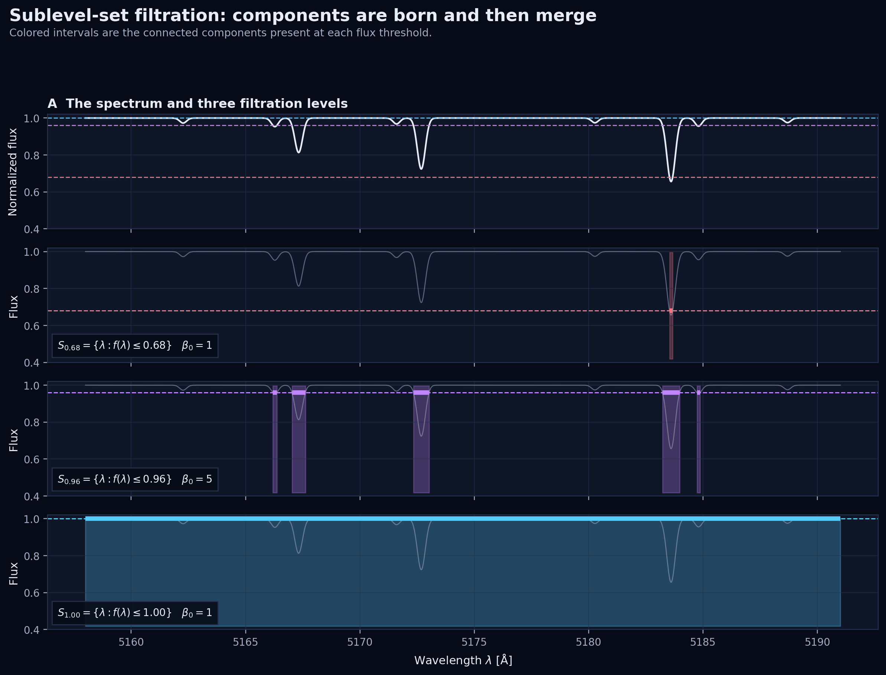
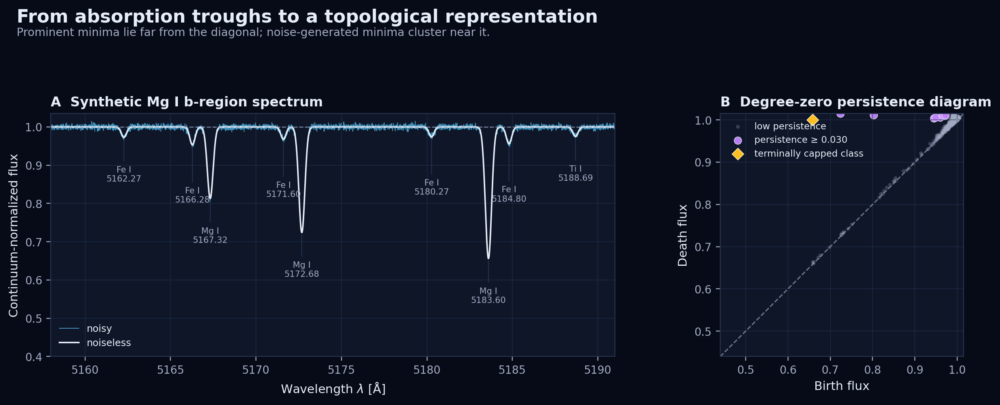
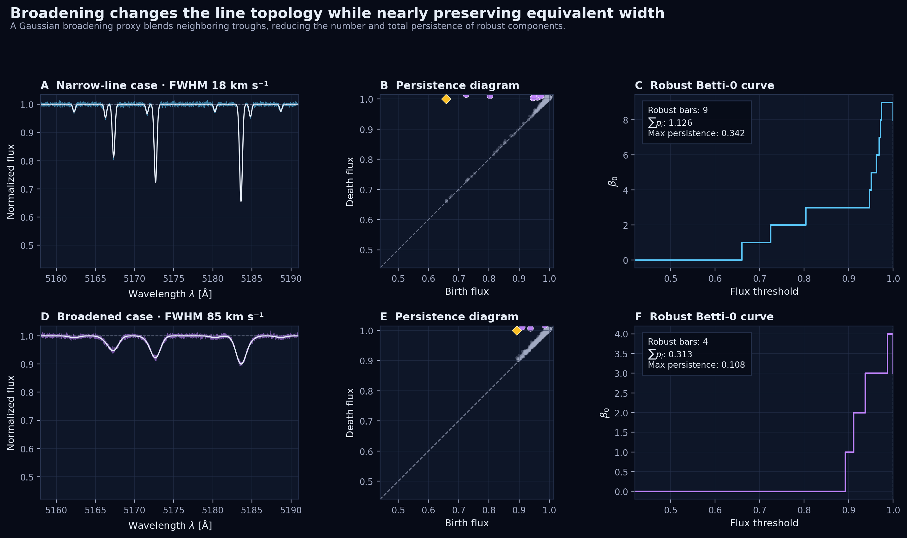

1. Introduction
A stellar spectrum is normally read through line positions, depths, widths, equivalent widths, asymmetries, and model fits. Persistent homology offers a complementary question: how does the connected structure of the spectrum evolve as we sweep through flux levels?
At first sight, topology and stellar spectroscopy may seem mismatched. A one-dimensional spectrum is merely a curve, and a curve drawn over an interval has no visually dramatic holes or voids. The useful topology does not come from treating the plotted curve as a static geometric shape. It comes from treating the normalized flux as a scalar function and following its sublevel sets. In this view, every absorption trough creates a connected component; neighboring troughs merge when the filtration reaches the flux peak between them. The full birth-and-merge history becomes a barcode or persistence diagram.
This is a natural representation of line prominence across many thresholds at once. It is stable to small perturbations, computationally inexpensive in one dimension, and sensitive to line splitting and blending. It is not a substitute for radiative transfer or classical line diagnostics. Rather, it is a compact structural summary that can be placed beside equivalent widths, atmospheric parameters, and learned spectral features.
Scope. The experiment below is deliberately pedagogical. Its Gaussian line list and Gaussian broadening proxy are designed to isolate the topology; they are not a physical atmosphere synthesis. For scientific inference, one would replace this toy generator with a library such as AMBRE, BOSZ, PHOENIX, or spectra synthesized by PySME.
2. A spectrum as a scalar function
Let $F_{\mathrm{obs}}(\lambda)$ denote the observed flux on a wavelength interval $\Lambda=[\lambda_{\min},\lambda_{\max}]$, and let $C(\lambda)$ be an estimate of the continuum. We work with the continuum-normalized spectrum
$$ f(\lambda)=\frac{F_{\mathrm{obs}}(\lambda)}{C(\lambda)}. $$
Ideally, $f(\lambda)\approx 1$ away from lines and $f(\lambda)<1$ inside absorption features. For every flux threshold $a$, define the sublevel set
$$ S_a=f^{-1}(({-\infty},a]) =\{\lambda\in\Lambda:f(\lambda)\le a\}. $$
If $a\le b$, then $S_a\subseteq S_b$. The collection $\{S_a\}_{a\in\mathbb{R}}$ is a filtration: a nested family of spaces indexed by flux. At a very low threshold, the set is empty. When the threshold reaches a local minimum of $f$, a small interval appears around the line core. As the threshold rises, that interval expands. When two expanding intervals touch at a local maximum, two connected components become one.

2.1 Discretization as a path complex
An observed spectrum is sampled at wavelengths $\lambda_0<\lambda_1<\cdots<\lambda_{n-1}$ with fluxes $f_i=f(\lambda_i)$. The natural simplicial complex is a path: vertex $v_i$ represents sample $i$, and edge $[v_i,v_{i+1}]$ joins adjacent wavelengths. Extend the flux from vertices to simplices by the lower-star rule
$$ \bar f(\sigma)=\max_{v_i\in\sigma} f_i. $$
The discrete filtration is then $K_a=\{\sigma\subseteq K:\bar f(\sigma)\le a\}$. A vertex enters at its own flux; an edge enters when both endpoints have entered. This exactly reproduces the component births and merges of a piecewise-linear interpolation of the sampled spectrum.
3. From absorption lines to persistent homology
Apply degree-zero homology to every filtration level. $H_0(K_a)$ records connected components, and its dimension
$$ \beta_0(a)=\dim H_0(K_a) $$
is simply the number of wavelength intervals below threshold $a$. The inclusions $K_a\hookrightarrow K_b$ for $a\le b$ induce linear maps $H_0(K_a)\to H_0(K_b)$. Persistent homology follows each component through these maps.
At a merge, the elder rule preserves the component with the lower birth value and terminates the younger one. Each finite component is represented by an interval $[b_i,d_i)$ or a point $(b_i,d_i)$ in the persistence diagram
$$ D_0(f)=\{(b_i,d_i):b_i<d_i\}. $$
Points near the diagonal $b=d$ have small persistence and usually describe shallow fluctuations. Deep, well-separated troughs sit far from the diagonal. The Euclidean vertical distance $d_i-b_i$ is the line's persistence, while its $L^\infty$ distance to the diagonal is $(d_i-b_i)/2$.

3.1 What happens to the essential component?
Ordinary $H_0$ persistence contains one component that never dies: the one born at the global minimum. Mathematically, its interval is $[b_\star,\infty)$. That is inconvenient in a spectroscopy plot because the strongest line would be the only one without a finite prominence. Here I cap this terminal interval at the continuum level $a=1$. The yellow diamond in the figures therefore means $[b_\star,1]$; it is a stated visualization convention, not an ordinary finite persistence pair. Extended persistence is a more formal alternative when one wants every class to receive a finite death.
3.2 Useful summaries
A persistence diagram is a variable-size multiset, but several fixed or functional summaries are convenient for comparison and machine learning:
- Betti curve: $\beta_0(a)=\sum_i\mathbf{1}_{[b_i,d_i)}(a)$ counts active components at each flux level.
- Total persistence: $\mathrm{TP}_q=\sum_i(d_i-b_i)^q$ measures cumulative topological prominence.
- Persistence entropy: with $w_i=p_i/\sum_jp_j$, use $-\sum_iw_i\log w_i$ to quantify how evenly prominence is distributed among features.
- Landscapes and images: stable vectorizations of the diagram suitable for averages, statistical tests, or conventional machine-learning models.
3.3 The wavelength caveat
A standard persistence diagram does not retain absolute wavelength. Two identical line patterns translated along the wavelength axis can have the same diagram. For spectroscopy, I recommend storing a decorated pair $(b_i,d_i,\lambda_i^{\mathrm{birth}},\lambda_i^{\mathrm{merge}})$ alongside the standard diagram. The first two coordinates carry stable topological information; the wavelength coordinates preserve line identity and enable cross-matching with atomic transitions.
4. Stability—and why preprocessing still matters
Persistent homology is useful here because persistence diagrams of tame functions satisfy the bottleneck stability inequality
$$ d_B\!\left(D_0(f),D_0(g)\right)\le \|f-g\|_\infty. $$
If every normalized flux value changes by at most $\varepsilon$, the persistence diagram moves by at most $\varepsilon$ in bottleneck distance. A feature with persistence at most $2\varepsilon$ can be matched to the diagonal and eliminated; a much longer-lived feature cannot disappear under that perturbation without leaving a nearby counterpart. This is a deterministic statement about a uniform error bound. Gaussian noise is unbounded, so “$2\sigma$” should not be substituted mechanically for $2\varepsilon$; in practice one can estimate thresholds from uncertainties, repeated observations, or noise-only surrogates.
Stability does not rescue poor preprocessing. The topology is computed from the function we supply, and continuum errors, gaps, cosmic rays, telluric residuals, and nonuniform sampling all change that function. Before comparing diagrams, a realistic pipeline should:
- shift spectra to a common rest-frame wavelength grid;
- mask or model telluric regions, bad pixels, and emission artifacts;
- normalize the continuum using a protocol held fixed across the sample;
- match spectral resolution or explicitly study its effect;
- propagate flux uncertainties with Monte Carlo realizations;
- compute topology inside physically meaningful wavelength windows rather than across uncontrolled gaps.
Continuum normalization is especially important. Multiplying a spectrum by a curved baseline can introduce large-scale minima, change merge levels, and inflate persistence. Modern synthesis and fitting workflows therefore treat continuum placement as part of the inference problem rather than as a harmless cosmetic operation.
5. Computing $H_0$ persistence in one dimension
General persistent-homology software works here, but the one-dimensional case admits a particularly transparent union–find algorithm. Sort vertices by increasing flux. Activate each vertex; if neither neighbor is active, it creates a component. If one neighbor is active, it joins that component. If both neighbors belong to different components, a merge occurs and the younger component dies at the current threshold.
Sorting costs $O(n\log n)$, while the union–find operations are essentially linear. The snippet below is the core calculation used for the figures. It records the birth and merge indices as well as the persistence coordinates.
import numpy as np
def lower_star_h0(values, terminal_level=1.0):
f = np.asarray(values, dtype=float)
n = f.size
parent = np.arange(n)
birth = f.copy()
birth_index = np.arange(n)
active = np.zeros(n, dtype=bool)
pairs = []
def find(i):
while parent[i] != i:
parent[i] = parent[parent[i]]
i = parent[i]
return i
for i in np.argsort(f, kind="stable"):
active[i] = True
for j in (i - 1, i + 1):
if j < 0 or j >= n or not active[j]:
continue
ri, rj = find(i), find(j)
if ri == rj:
continue
# Elder rule: the lower birth survives.
if (birth[ri], birth_index[ri]) <= (birth[rj], birth_index[rj]):
old, young = ri, rj
else:
old, young = rj, ri
pairs.append((birth[young], f[i], birth_index[young], i))
parent[young] = old
parent[ri] = old
parent[rj] = old
root = find(int(np.argmin(f)))
pairs.append((birth[root], terminal_level, birth_index[root], -1))
pairs = np.asarray(pairs, dtype=float)
persistence = pairs[:, 1] - pairs[:, 0]
return pairs[persistence > 1e-12]Equal flux values require a consistent tie convention; the stable sort above is adequate for the noisy example and zero-length pairs are discarded. For quantized spectra with many ties, process equal-valued lower stars as a batch or use a tested persistence library.
6. Experimental design
To make the construction concrete, I generated a toy continuum-normalized spectrum over $5158$-$5191$ Å. The window contains three dominant Mg I b-like absorptions and six weaker Fe I/Ti I features. Each intrinsic line is Gaussian,
$$ f_{\mathrm{int}}(\lambda) =1-\sum_{j=1}^{m} A_j \exp\!\left[-\frac{(\lambda-\mu_j)^2}{2s_j^2}\right]. $$
I then convolved the spectrum with a Gaussian kernel whose full width at half maximum is expressed in velocity units. The two cases use effective FWHM values of 18 and 85 km s$^{-1}$. This kernel is only a broadening proxy: an analysis of rotating stars should use an appropriate limb-darkened rotational kernel and the instrument line-spread function. Finally, I imposed a weak curved continuum, added independent Gaussian noise with $\sigma_f=0.004$, and divided by the known continuum.
import numpy as np
from scipy.ndimage import gaussian_filter1d
C_KMS = 299_792.458
def synthetic_spectrum(wavelength, line_list, fwhm_kms,
noise_sigma=0.004, seed=7):
absorption = np.zeros_like(wavelength)
for center, depth, sigma in line_list:
z = (wavelength - center) / sigma
absorption += depth * np.exp(-0.5 * z**2)
intrinsic = np.clip(1.0 - absorption, 0.02, None)
dlambda = np.median(np.diff(wavelength))
sigma_lambda = 5175.0 * fwhm_kms / C_KMS / 2.35482
clean = gaussian_filter1d(intrinsic, sigma_lambda / dlambda)
x = (wavelength - wavelength.mean()) / np.ptp(wavelength)
continuum = 1.0 + 0.018*x + 0.012*(x*x - 1/12)
rng = np.random.default_rng(seed)
observed = continuum*clean + rng.normal(0, noise_sigma, wavelength.size)
return observed / continuum, cleanFor visualization, I call a pair robust when $p_i\ge0.030$, which is 7.5 times the injected pointwise noise standard deviation. This is a pedagogical cutoff, not a universal detection threshold. A research analysis should calibrate the false-feature distribution with the actual covariance and reduction pipeline.
7. Results: the topology of line blending
The narrow-line spectrum resolves all nine injected troughs as robust persistent components. In the broadened spectrum, neighboring lines merge into four robust complexes. The change is immediately visible in the persistence diagrams and in the robust Betti curves.

| Quantity | Narrow: 18 km s$^{-1}$ | Broadened: 85 km s$^{-1}$ | Interpretation |
|---|---|---|---|
| Equivalent width | 0.433396 Å | 0.433395 Å | Area is preserved by the normalized convolution to numerical precision. |
| Maximum line depth | 0.3438 | 0.1002 | Broadening makes the deepest trough shallower. |
| Robust components | 9 | 4 | Previously separated lines become blended complexes. |
| Total robust persistence | 1.1257 | 0.3131 | Cumulative prominence falls by about 72%. |
| Largest persistence | 0.3417 | 0.1080 | Even the dominant absorption complex moves closer to the diagonal. |
7.1 What did topology add?
Equivalent width barely changes because convolution redistributes absorption without changing its area. Yet the topology changes strongly: the number of robust troughs falls from nine to four, total persistence falls by roughly 72%, and the persistence diagram contracts toward the diagonal. Thus equivalent width and persistent homology answer different questions:
- Equivalent width: how much integrated absorption is present?
- Persistence: how is that absorption organized into distinct, hierarchically separated troughs?
This distinction could be useful when spectra with similar integrated absorption differ in rotation, instrumental resolution, unresolved multiplicity, line blending, or velocity structure. The diagram does not identify which physical mechanism caused the change; it supplies a compact observable whose physical sensitivity must be calibrated with controlled synthetic grids.
7.2 Why persistence is not just line depth
A line depth compares a minimum with an externally chosen continuum. Persistence compares the same minimum with the local merge level determined by its neighbors. For an isolated line on a flat continuum the two are similar. In a crowded blend they differ: a deep shoulder can have modest persistence if it merges with a still deeper component at a low saddle. This is exactly the hierarchy that a barcode makes explicit.
8. From the toy problem to observed spectra
A realistic experiment should be designed as a controlled sensitivity study. Choose a spectral window, a forward-model grid, and nuisance transformations; then ask which topological summaries respond to the physical parameter of interest while remaining stable to the nuisance parameters.
| Scientific question | Controlled variation | Candidate topological observable |
|---|---|---|
| Rotation and blending | Vary $v\sin i$ after matching instrumental resolution. | Robust bar count, total persistence, diagram distance. |
| Metallicity or abundance | Vary abundance at fixed $T_{\mathrm{eff}},\log g$, and broadening. | Persistence by wavelength window; decorated birth locations. |
| Surface gravity | Compare pressure-sensitive line wings and blends. | Multiscale component counts and persistence landscapes. |
| Binaries or velocity components | Inject shifted secondary spectra with varying flux ratio. | Emergence, splitting, and vineyard trajectories of persistent features. |
| Anomaly detection | Compare observed diagrams with a synthetic-library neighborhood. | Bottleneck/Wasserstein distance plus classical residual diagnostics. |
8.1 Uncertainty propagation
Suppose flux uncertainties and their covariance are available. Draw Monte Carlo spectra $f^{(r)}$, repeat the same normalization or continuum-marginalization procedure, and compute $D_0^{(r)}$. The resulting ensemble gives uncertainty bands for Betti curves and total persistence, as well as confidence regions for prominent diagram points. Correlated noise matters: independent pixel perturbations are not an adequate surrogate for resampling, line-spread-function, and continuum-fit errors.
8.2 Comparing many stars
For a survey, one can compute diagrams in fixed rest-frame windows and compare them with bottleneck or Wasserstein distances. Persistence landscapes or persistence images convert the variable-size diagrams into arrays suitable for regression and classification. A robust model would concatenate these topological features with classical inputs such as equivalent widths, colors, signal-to-noise ratio, and instrumental metadata rather than forcing topology to carry all information by itself.
9. Limitations and extensions
- Continuum dependence: persistence values change when the baseline is biased. The continuum model must be controlled or marginalized.
- No wavelength in the plain diagram: keep decorated critical-point locations when line identity matters.
- Resolution dependence: broadening is signal, nuisance, or both depending on the scientific question. Do not compare unmatched instruments blindly.
- Emission lines: use a superlevel filtration of $f$, or equivalently a sublevel filtration of $-f$, so emission maxima become births.
- P-Cygni or mixed profiles: analyze sublevel and superlevel diagrams together, retaining their wavelength ordering.
- Higher-dimensional topology: a single scalar spectrum on an interval has informative $H_0$ but no intrinsic $H_1$. Loops require another construction, such as a delay embedding, a time series of spectra, or a wavelength–time image.
- Scientific validation: any claimed sensitivity to stellar parameters must be tested against synthetic grids, repeated observations, and classical baselines.
10. Takeaways
The topological representation developed here is simple: normalize the spectrum, build the sublevel filtration of its flux, and record the $H_0$ birth-and-merge pairs. Yet this simple construction reveals a useful structural observable. Absorption minima become components; local peaks determine merge levels; persistence quantifies prominence; and the full diagram summarizes line hierarchy across all thresholds.
In the synthetic experiment, broadening preserved equivalent width while substantially reducing component count and persistence. That complementarity is the main reason to pursue this representation. The most promising next step is not to replace spectroscopy with topology, but to build a topology–physics dictionary using controlled stellar-atmosphere grids and then ask where the topological summaries add information beyond established line diagnostics.
References and further reading
- H. Edelsbrunner, D. Letscher, and A. Zomorodian, “Topological Persistence and Simplification”, Discrete & Computational Geometry 28, 511–533 (2002).
- D. Cohen-Steiner, H. Edelsbrunner, and J. Harer, “Stability of Persistence Diagrams”, Discrete & Computational Geometry 37, 103–120 (2007).
- P. Bubenik, “Statistical Topological Data Analysis using Persistence Landscapes”, Journal of Machine Learning Research 16, 77–102 (2015).
- H. Adams et al., “Persistence Images: A Stable Vector Representation of Persistent Homology”, Journal of Machine Learning Research 18, 1–35 (2017).
- P. de Laverny, A. Recio-Blanco, C. C. Worley, and B. Plez, “The AMBRE project: A new synthetic grid of high-resolution FGKM stellar spectra”, Astronomy & Astrophysics 544, A126 (2012).
- A. Wehrhahn et al., “PySME — Spectroscopy Made Easier”, Astronomy & Astrophysics 671, A171 (2023).
If you notice an error or would like to discuss an application to a particular class of stellar spectra, feel free to send me an email.